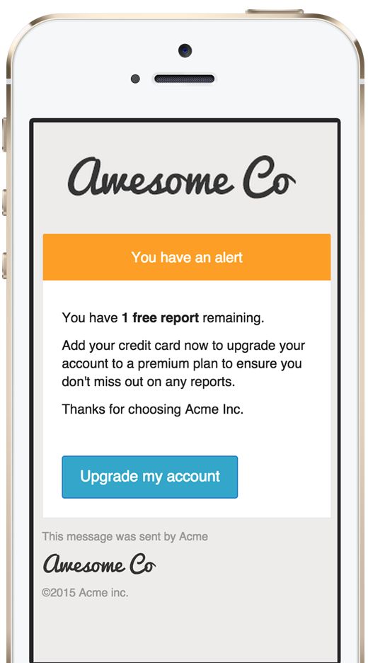
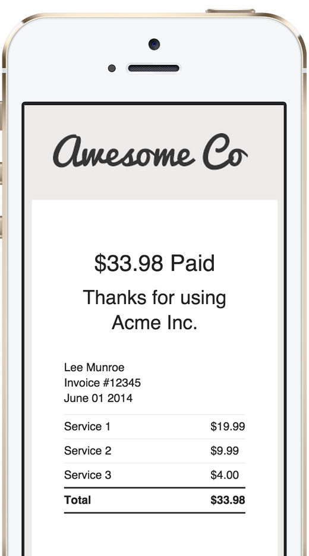
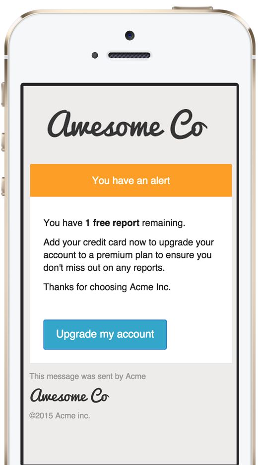
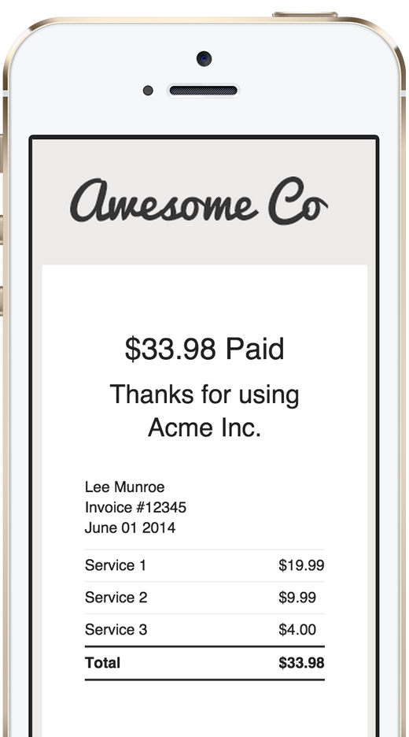

A complete workflow to email
Inker takes you from coding to sending, keep it centralized
so your team stop loosing time with emails & focus on more important things
Coding
Inker keep your email code clean & gives you the tools to test faster
- Base templates for transactional emails.
- Sane CSS components structure on top of Zurb Ink.
- Sane HTML components structure with Mozilla Nunjucks.
- Localization.
- Keep it clean, generate templates with inlined CSS.
- Auto deployment on litmus.
- Auto deployment to any email address for testing.
Delivery server
You have a library to send to sendgrid? Great, but what happen's when sendgrid is down?
- Failover, never stop sending again.
- Asyncronous for a warp speed response.
- Generate emails with custom data on the fly.
- Integrated with all major email delivery providers.
- Logs! hipchat, slack, logtenries, winston, push notifications with push bullet, are all in but you can easily add your own too.
 


